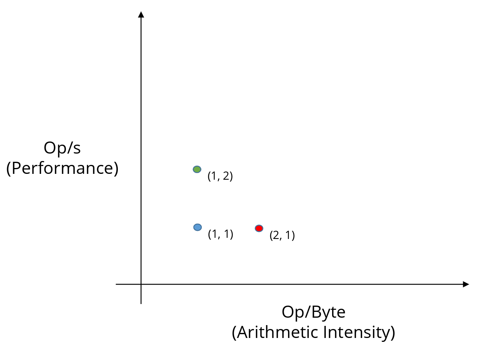
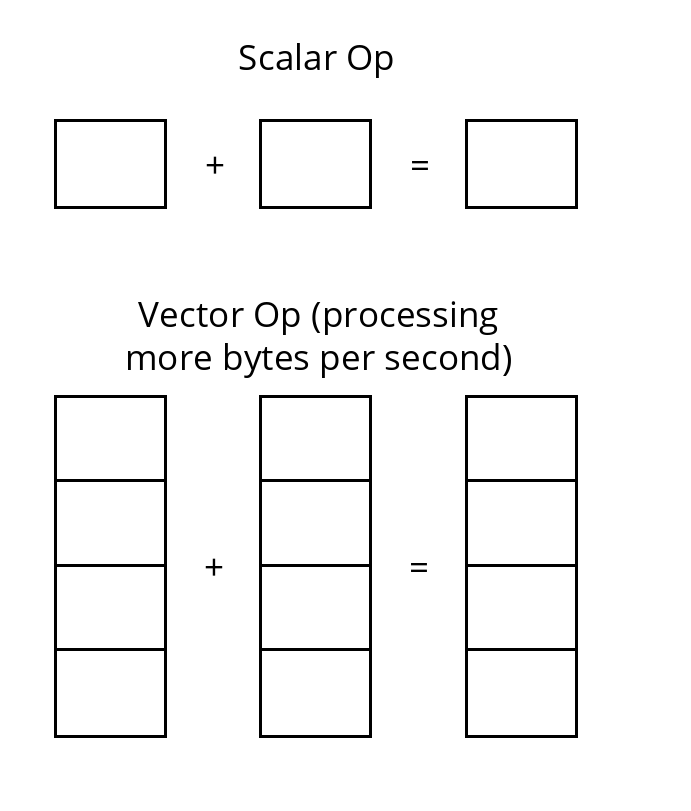
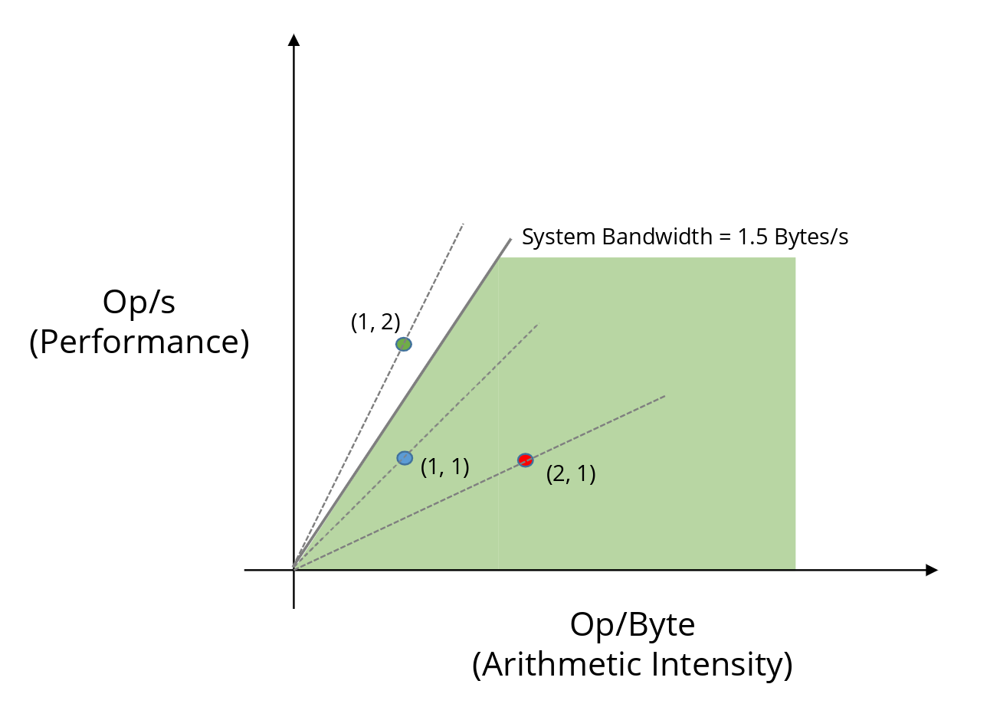
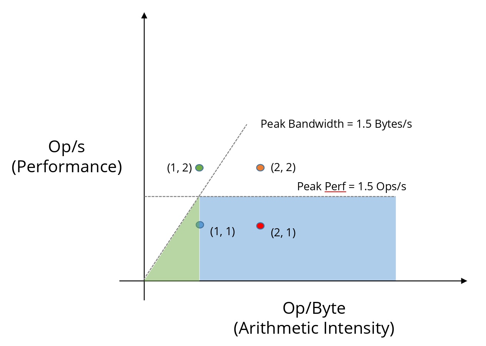

Understanding the roofline model without the roof!
Preface
Any computing system consists of memory and a processor, like the diagram below. During a program execution, we fetch some data from the memory into the processor, and perform operations in it.
The speed at which data can be transferred through the bus can be denoted using the unit: Byte/s. This is a property of the memory unit.
The speed at which a processor can execute the ops can be denoted using unit: op/s. This is a property of the processor (CPU/GPU).

An example of a program would be a vector addition. We bring two float element from memory, add them (the actual op), and store them back into another memory location. Let’s omit the store for now, since storing may not use the bandwidth immediately (may be stored in cache for later write).
This means we take two float (4 + 4 = 8 bytes), and perform a single op in it.
We say that this program has an arithmetic intensity (AI) of 1 op per 8 byte = 1/8 op/byte. Per 1 byte it fetches, it does 1/8 operations. This performance metric measures how well the program is utilizing the data it fetches. This is the property of the program/implementation.
Another type of performance metric is how fast the CPU/GPU is executing these ops: Op/s. We call this computational performance (or sometimes throughput).
AI = op/byte; how many operations we are getting out of a byte; also called Operational Intensity (OI) sometimes
Performance = op/s; tells you how fast your processor is crunching these operations; also called throughput
Note: op is typically called FLOP since we mostly care about floating points operations. But we will keep it simple and call it op throughout the article.
The Plot
Let’s plot them in a X-Y axis. X is op/byte - how well we are utilizing a byte we are getting. Y is op/s - how fast are we running these ops.

As we go right, we gain more performance by better utilizing the data we have in hand.
As we go up, we gain more performance by squeezing more operations into each cycle (second).
In many cases, we actually move diagonally (up-right) since the improvement impacts both axis.
Improvement Strategies
Let’s consider a single points on this plot first. The blue point (1, 1).
This tells us, our implementation is executing 1 op per byte it receives (x coordinate). And it is executing speed is 1 op/s (the y coordinate).
This information by itself doesn’t say much about how good the implementation is. But following the theme of this article (memory or processor), we can do two things to gain more performance.
Either we can try to better utilize the bytes we have in hand. I.e. we can increase the amount of ops we can do per byte (try to move right horizontally).
That’s going from blue (1, 1) point to red (2, 1) point looks like. How can we do more work per byte?
An example would be a matmul operation where the B matrix is also in row major order. Since we need to access elements across the columns, during each load the system will bring a cache, use only one element from it, and throw the rest away.

Accessing an element of each row means we will invalidate cache line every single time Instead, if we use the transposed B matrix, this will result in better cache utilization. Meaning that we are doing more work with the available bytes. This implementation will increase AI, depicting the point moving right horizontally (blue to red point).
Or, we can try to increase the number of ops per sec.
That’s going from blue (1, 1) point to green point (1, 2).
How do we increase ops/s in an implementation given the same byte fetched? I.e. how do we improve performance (or throughput)? Using some sort of instruction level parallelism.
An example could be vectorizing. Instead of 1 op consuming scalar bytes, we let it consume wider bytes.

Vectorizing the operation means more data is processed by a single operation Another example is to reduce warp divergence in GPU. If half of the warp is idle, then essentially it is taking twice the amount cycle to process the same amount of data. If we rewrite the code so that each warp is doing the same thing (e.g.: wrap specialization), the implementation becomes more efficient in terms of performance (ops/s) - thus moves upwards vertically.
What prevents us from moving upward vertically by indefinite amount?
The Rooflines
Memory Roof
Let’s look at the bandwidth we will need for each of the points. The bandwidth means how fast memory needs to move in order to accommodate that implementation. We can compute the bandwidth by computing the slope, \(y \div x = ops/s \div ops/byte = byte/s\).

For the blue point (1,1): BW = 1/1 = 1 byte/s
For the red point (2,1): BW = 1/2 = 0.5 byte/s
For the green point (1, 2): BW = 2/1 = 2 byte/s
We say the green point is more memory intensive than blue and red. The order of memory intensity is green > blue > red (given by the slopes).
This means, the green implementation is more memory-bound. i.e. in order to keep that performance, we need to have that high bandwidth in that system.
What if we don’t have that much BW in the system? If the max BW is 1.5B/s? This means that implementation (green dot) is not supported by that system.

We hit a wall! A roof to be specific. A slanted roof. The memory bandwidth roof. This roof tells us that our implementation cannot arbitrarily improve performance by vectorization and eventually hit a point where it will simply not be able to receive enough bytes to process.
Compute Roof
Okay great! That means we are probably not using up the bytes we have at hand. Lets go right (red point) and try to go up. We adjust our implementation so that it now requires less memory and do more work with it. In that case what might be preventing us to go up?

Let’s imagine an orange dot (2, 2). The BW is 2/2 = 1 bytes/s which is below the peak BW of the system (1.5 bytes/s). However, the processor itself also has its max capacity - the highest op it can crank per second - the peak performance.
If the peak performance is 1.5 Ops/s, this means even we have the right amount of data, we cannot process it faster than 1.5 ops/s. This makes any point on the horizontal line (peak perf line) compute bound. This line is called the compute roof.
The Roof Equation
Let’s end the discussion with the equation of the roof.
\[ Performance = min(BW_{peak} \times AI, Performance_{peak}) \]
This equation generates \(y\) for every possible value of AI (\(x\)).
The first part is where the operation is memory bound. For this, the equation is \(y = slope \times x\) where y = Performance, x = AI, and slope is max possible BW (\(BW_{peak}\)).
The second part, the compute bound roof is straightforward, \(Performance_{peak}\). It already has the right unit (op/s).
Summary
Let’s recap the whole idea and devise a solid strategy. Given an implementation (blue dot) our goal is to move it as right (higher arithmetic intensity = more FLOPs per byte transferred) and up (higher achieved FLOP/s = better utilization of the compute units) as possible.

Going up (higher OP/s, better compute utilization)
These techniques primarily improve how efficiently the processor/GPU uses its floating-point units, vector lanes, tensor cores, etc.:
- SIMD/Vectorization (use wider vectors: AVX, AVX-512, NEON, CUDA warps with vector types)
- Loop Unrolling (reduce loop overhead, expose more independent operations)
- Kernel/Operator Fusion (e.g. Fused Multiply-Add → FMA, fused conv+bn+relu, elementwise + reduction chains)
- Warp Specialization (GPU) / Thread divergence minimization
- Prefetching (software prefetch or hardware auto-prefetch tuning — hides latency → higher issue rate)
- Better instruction mix / throughput-bound fixes (reduce divides → use reciprocals, minimize expensive math functions)
- Multi-threading/Occupancy (more concurrent warps/threads to hide latency and saturate functional units)
- Use of specialized units (tensor cores, DP4A/INT8/FP16/bfloat16 paths, AMX on x86, etc.)
- Reduce thread predication/control divergence (branchless code, mask-based ops)
- Instruction-level parallelism (ILP) within a thread (reorder code, expose more independent ops)
Going Right (higher arithmetic intensity, lower bytes per OP)
These focus on reducing memory traffic relative to computation (more reuse, less movement):
- Tiling / Blocking (cache blocking, shared memory tiling on GPU, register blocking)
- Kernel / Operator Fusion (fewer intermediate arrays → drastically less memory traffic)
- Better data layout (AoS → SoA, structure-of-arrays, padding for alignment, transpose tricks)
- Exploit Cache Locality (contiguous access, temporal locality → data reuse soon after loading, spatial locality)
- Loop fusion or fission (strategic — fuse when it increases reuse, fission when it enables better tiling/vectorization)
- Prefetching + cache blocking together (move data into faster levels before needed)
- In-place algorithms (avoid extra read/write of temporary buffers)
- Algorithmic or mathematical reformulation (higher-order methods, winograd-style conv, Strassen-like matmul, etc. — trade some extra flops for far less data movement)
- Quantization or lower precision (when acceptable — fewer bytes per value → higher effective intensity)
- Sparsity exploitation (structured/unstructured sparsity, pruning + sparse formats → skip loading/storing zeros)
- Data compression or lossless compression in memory (sometimes used in scientific codes)
Dual-impact techniques (move both right and up)
These are especially powerful because they simultaneously reduce memory pressure and improve compute efficiency:
- Kernel Fusion / Operator fusion (very high impact on both axes)
- Tiling + Vectorization together (typical combination in high-performance codes)
- FMA usage (often enabled by fusion or careful coding)
- Shared memory + warp-level tiling (GPU classic)
- Register blocking + unrolling (CPU classic)
A good mental model is: first get the point right of the ridge point (out of the memory-bound regime), then push up toward the flat compute roof. Many real optimizations alternate between these two goals as you iterate.